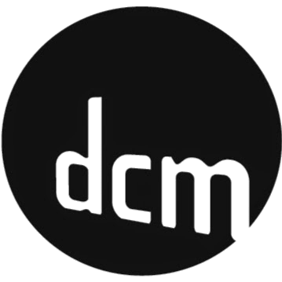

Angus MacDonald
 LinkedIn
LinkedIn
 GitHub
GitHub

R/GA embedded at Google
Software Engineer
Mar. 2016 - Present

Nerd Corps Entertainment / DHX Media
Developer
Aug. 2014 - Feb. 2016
Associated Veterinary Purchasing
Developer
Aug. 2014 - Feb. 2016

DCM Studios